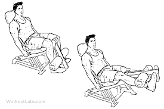

Hit the gym
Ćwiczenia na górne partie ciała
- WYCISKANIE SZTANGI W LEŻENIU NA ŁAWCE POZIOMEJ
Kładziemy się na ławce tak, by nogi ugięte były pod kątem prostym i przylegały do podłoża. Uchwyt średni(taki, by po opuszczeniu sztangi na klatkę ramiona tworzyły z przedramionami kąt prosty-kciuk dla bezpieczeństwa powinien obejmować sztangę-choć wielu bardziej doświadczonych kulturystów preferuje raczej tzw. ”małpi chwyt” (kciuk ponad gryfem).Opuszczamy sztangę na klatkę na wysokość ok.1 cm powyżej brodawek. Przy opuszczaniu sztangi wykonujemy głęboki wdech-wydychamy powietrze w trakcie wyciskania. Można okresowo praktykować przytrzymywanie sztangi przez chwilę na klatce przed wyciśnięciem.(szczególnie przydatne, jeżeli mamy w planach ewentualne starty w zawodach w wyciskaniu)-dodatkowo rozbudowuje siłę-pobudza do dodatkowego wysiłku. Łokcie prowadzimy w trakcie całego ruchu po bokach-tak by nie „uciekały”do środka. Ruch wyciskania kończymy(dla lepszego napięcia mięśni)zanim łokcie zostaną zblokowane. Ćwiczenie to można wykonywać również na maszynach lub na suwnicy Smitha
- ROZPIĘTKI ZE SZTANGIELKAMI W LEŻENIU NA ŁAWCE POZIOMEJ
Ćwiczenie rozpoczynamy z ramionami wyprostowanymi-prostopadłymi do podłoża( palce dłoni skierowane są do siebie), a w trakcie ruchu lekko uginamy je w łokciach. Nabieramy powietrza, gdy sztangielki są u góry(na początku ruchu) wydychamy je, gdy sztangielki wędrują do góry. W końcowej fazie ruch można zatrzymać na chwilę w celu lepszego napięcia mięśni. Staramy się nie uderzać sztangielkami o siebie, ale zatrzymywać ruch zanim się zetkną. Ważne jest wykonywanie pełnego zakresu ruchu(by dostatecznie rozciągnąć mięśnie)-im większy zakres wykonanego ruchu, tym pełniejszy ogólny rozwój mięśnia. Obciążenia dostosowujemy takie, by wykonywać ćwiczenie poprawnie technicznie. Ćwiczenie to można również wykonywać przy pomocy linek wyciągów lub specjalnej maszyny
- UGINANIE RAMION ZE SZTANGIELKAMI STOJĄC PODCHWYTEM
Ćwiczenie to można wykonywać zarówno w pozycji stojącej, jak i siedzącej. Bardzo dobre, jako rozgrzewkowe przed ciężkimi seriami ze sztangą, ale również jako samodzielne ćwiczenie rozwijające masę i kształt bicepsów. Polecane wykonanie z „supinacją” nadgarstka. Polega ona na stopniowym obracaniu dłoni w trakcie wykonywania ćwiczenia. W pozycji wyjściowej( ramiona wyprostowane) dłonie zwrócone są ku sobie palcami, a w miarę uginania ramion obracają się tak, by w końcowym momencie ruchu(przy zgiętych ramionach)małe palce były wyżej od kciuków. Daje to dodatkowe napięcie mięśni oraz kształtuje kulistość bicepsów. Prostowanie ramienia kończymy w momencie rozciągnięcia mięśni dwugłowych(nie do pełnej możliwości stawu łokciowego). Ruch można wykonywać na przemian-raz jedna ręka, raz druga(po 1 powtórzeniu), obiema rękami jednocześnie, lub opuszczając jedną rękę- jednocześnie unosząc drugą. Samemu trzeba wybrać, która wersja jest dla nas najefektywniejsza. Ułożenie łokci jak w ćwiczeniu 1-ze sztangą. Można również pominąć supinację nadgarstka, ale zmniejsza to efektywność ćwiczenia.
- WYCISKANIE „FRANCUSKIE” SZTANGI W LEŻENIU
Kładziemy się na ławce poziomej, chwytamy sztangę nachwytem(ćwiczenie to można wykonywać również podchwytem-wtedy najbardziej zaangażowane są głowy boczne tricepsów, a najsłabiej głowy przyśrodkowe)na szerokość nieco mniejszą od barków. Prostujemy ręce tak, by gryf sztangi pozostawał wyżej od naszego czoła-ramiona tworzą z podłoga kąt mniejszy niż 90 stopni(do 45 stopni). Możemy użyć sztangi prostej i łamanej. Łamana ma tę zaletę, że zmniejsza naprężenia powstające w nadgarstkach. Ramiona prostujemy do zablokowania łokci. Pracują tylko stawy łokciowe. W ruchu pozostają jedynie przedramiona. Ciężar porusza się po łuku: od czoła do pozycji startowej. Ruch opuszczania wolniejszy od unoszenia. Ćwiczenie to można również wykonywać na ławce skośnej(głową do góry-aktywniej pracują wtedy głowy boczne i przyśrodkowe, i w dół-mocniej zaangażowane są głowy długie mięśni trójgłowych), ale zalecane jest zapoznanie się w pierwszej kolejności z prawidłową techniką na ławce poziomej. W innej wersji tego ćwiczenia sztangę zastępujemy drążkiem wyciągu dolnego umieszczonego za nami.
- PODCIĄGANIE NA DRĄŻKU SZEROKIM UCHWYTEM (NACHWYT)
Nie ma drugiego takiego ćwiczenia pod względem wszechstronności rozwoju mięsni grzbietu. Ćwiczenie to można wykonywać do karku i do brody, lecz wersja do karku jest mniej naturalna dla stawów. Chwytamy drążek nachwytem na szerokość taką, by po podciągnięciu ramiona z przedramionami tworzyły kąt prosty(w przybliżeniu).Nogi ugięte w kolanach(dla lepszej stabilności można je spleść).Łokcie pracują w płaszczyźnie pleców-w jednej linii. Wdech robimy przed rozpoczęciem ruchu podciągania-wydech dopiero, gdy jesteśmy już u góry. Ruch podciągania kończymy w momencie, gdy nasza broda(lub kark) jest na wysokości drążka lub nieco ponad nim. Opuszczamy się wolno i pod pełną kontrolą. Jeśli jesteśmy bardziej zaawansowani i możemy wykonać wiele powtórzeń w tym ćwiczeniu, to można zastosować dodatkowe obciążenie.
- ”MARTWY CIĄG”
Stajemy przodem do sztangi, w rozkroku na szerokość barków lub nieco szerszym, nogi lekko ugięte w kolanach, gryf sztangi nad palcami stóp, sztangę chwytamy nachwytem, nieco szerzej niż barki. Klatka wypchnięta ku przodowi, tułów wyprostowany, głowa lekko zadarta do góry. Ćwiczenie polega na unoszeniu sztangi w górę poprzez prostowanie nóg i wyprost tułowia. Ruch kończymy przy pełnym wyproście tułowia-nie odchylamy go do tyłu-grozi to kontuzją. Nie wolno również dopuszczać do tzw. ”kociego grzbietu”, czyli wygięcia pleców w łuk(szczególnie w dolnym odcinku).Powrót do pozycji wyjściowej zaczynamy od lekkiego ugięcia nóg w kolanach, a następnie pochylamy tułów(oczywiście cały czas jest on wyprostowany)robiąc skłon. Nie pochylamy się jednak zbyt nisko. Ruch opuszczania ciężaru wolny i kontrolowany-sztanga nie uderza o podłogę, ale dotyka jej. Można ćwiczenie to wykonywać przy użyciu suwnicy Smitha. Dla zwiększenia zakresu ruchu stosuje się podkładki pod nogi.
Ćwiczenia na dolne partie ciała
- PRZYSIADY ZE SZTANGĄ NA BARKACH
Ćwiczenie to można wykonywać zarówno ze sztanga, jak i sztangielkami,przy pomocy suwnicy Smithalub maszyny. Wchodzimy pod sztangę stojącą na stojakach, barki opuszczone i odwiedzione w tył, gryf sztangi dotyka naszego karku na mięśniach czworobocznych grzbietu(ich górnej części), dłonie rozstawione w wygodnej i stabilnej pozycji na gryfie, klatka wypchnięta ku przodowi, naturalna krzywizna kręgosłupa-dolny odcinek grzbietu wypchnięty do przodu, rozstaw stóp w zależności od naszego poczucia stabilności(zmiana rozstawu stóp powodować będzie atak na mięśnie pod innym kątem), najlepiej nieco szerzej, niż barki, całe stopy przylegają do podłogi, ciężar ma opierać się na piętach, głowa zadarta nieco do tyłu. Z tej pozycji nabieramy głęboko powietrza i ściągamy sztangę ze stojaków i rozpoczynamy ruch w dół(najlepiej przed tym wypuszczając powietrze po ściąganiu sztangi ze stojaków i nabierając go ponownie). Przez cały czas plecy wygięte w jednakowy sposób, pracują tylko nogi. Najlepiej, gdy przez cały czas biodra i pięty znajdują się w jednej linii, nie wypychamy kolan do przodu(nie powinny wysuwać się dalej niż końce palców stóp). Schodzimy w dół do momentu, gdy zanika kontrola pracy mięsni czworogłowych, a ich rozciągnięcie jest maksymalne. Rozpoczynamy powrót do pozycji wyjściowej, wypychając się piętami podnosimy się w gorę, jednocześnie wypychając biodra w przód, aż do pozycji startowej. Drugą wersją tego ćwiczenia są tzw. ”półprzysiady” lub „płytkie” przysiady, można je wykonać również na suwnicy Smitha. Różnica polega na mniejszym zakresie ruchu-opuszczamy się jedynie do momentu, gdy nasze nogi ugną się pod kątem równym lub nieco mniejszym, niż 90 stopni.
- PRZYSIADY NA SUWNICY SKOŚNEJ(HACK-MASZYNIE)
Stajemy na platformie suwnicy, plecy prosto, w dolnym odcinku wygięte do przodu, rozkrok na szerokość barków, stopy równolegle, w linii bioder lub nieco wysunięte ku przodowi, ale nie na tyle, by biodra odrywały się od powierzchni oparcia. Ramiona ugięte, dłonie na uchwytach suwnicy. Ważne jest, by ciężar był wypychany z pięt-nie z palców stóp. Z tej pozycji opuszczamy się wykonując przysiad do momenty, gdy nasze nogi będą ugięte pod kątem 90 stopni lub nieco mniejszym, ale nie tak głęboko, by utracić napięcie i kontrolę mięśni czworogłowych.
- PROSTOWNIE NÓG W SIADZIE

Siadamy na siodle maszyny(ławki), dobrze gdy mamy oparcie-zapewnia ono lepszą stabilność tułowia, dłońmi chwytamy za uchwyt(lub krawędź) maszyny. Nogi ugięte w kolanach, zaparte o drążek maszyny na stopami(na wysokości kostek). Z tej pozycji wykonujemy ruch prostowania nóg do pełnego wyprostu w stawach kolanowych. W pozycji wyprostowanej zatrzymujemy ruch przez chwilę dla lepszego napięcia mięśni. Po czym powracamy do pozycji wyjściowej. Powrót w tempie wolnym i pod pełną kontrolą ciężaru. Powietrze nabieramy przed rozpoczęciem prostowania, wypuszczamy je, gdy kończymy prostowanie nóg.
- UGINANIE NÓG W LEŻENIU
Ćwiczenie to wykonujemy na specjalnej maszynie lub za pomocą wyciągu i specjalnym opasek na nogi. Kładziemy się na brzuchy tak, by poza ławkę wystawały jedynie podudzia poniżej kolan, nogi wyprostowane w kolanach, zaparte o drążek maszyny na wysokości ścięgien Achillesa(nad piętami), dłonie na uchwytach(lub krawędzi) maszyny. Z tej pozycji wykonujemy ruch maksymalnego uginania nóg w kolanach. W końcowym momencie uginania zatrzymujemy ruch przez chwilę dla lepszego napięcia mięśni. Po czym powracamy do pozycji wyjściowej. Powrót w tempie wolnym i pod pełną kontrolą ciężaru. Biodra(jak i reszta tułowia) przez cały czas trwania ćwiczenia przylegają do powierzchni ławki. Powietrze nabieramy przed rozpoczęciem uginania, wypuszczamy je, gdy kończymy uginanie nóg. Ćwiczenie to można wykonać również w pozycji stojąc(jednonóż)-na maszynie, lub wyciągu.
- ”MARTWY CIĄG”NA PROSTYCH NOGACH

Stajemy w rozkroku nieco mniejszym od szerokości barków. Nogi minimalnie ugięte w kolanach-zupełnie proste nogi łatwo ulegają kontuzjom-szczególnie kolana. Uginamy się w pasie, przy jednoczesnym wygięciu do wewnątrz dolnego odcinka grzbietu. Staramy się, by sztanga prowadzona była przez cały czas blisko ciała. Im dalej do przodu wychylona sztanga, tym większe naprężenia w dolnych partiach grzbietu. Zalecane jest używanie pasa treningowego podczas wykonywania tego ćwiczenia. Dla lepszego rozciągnięcia mięsni grzbietu i ud możemy zastosować podkładkę pod nogi, co zwiększa zakres ruchu.(gif 17a.).Ćwiczenie można wykonać również przy pomocy suwnicy Smitha. Bardzo dobre ćwiczenie dla tych, którzy dolne mięśnie grzbietu trenują na jednej sesji z mięśniami ud(szczególnie dwugłowymi).
- WSPIECIA NA PALCE W STANIU
Ćwiczenie to można wykonywać zarówno przy pomocy sztangi(gif 1), suwnicy Smitha(gif 1a) lub specjalnej maszyny(gif 1c). Można wykonywać je również bez obciążenia, a także jednonóż(gif 1b).Sztangę można również zastąpić sztangielką trzymaną w dłoni(po tej samej stronie, co ćwiczona noga: lewa noga- lewa ręka, prawa noga- prawa ręka). Istotnym elementem w tym ćwiczeniu jest użycie grubej podkładki pod palce stóp, która pozwala zwiększyć znacznie zakres ruchu, a co za tym idzie-poprawić efektywność ćwiczenia. Pozycja wyjściowa, to wyprostowany tułów i plecy, nogi wyprostowane w kolanach, rozkrok 25-30 cm, palce stóp(wraz ze stawami łączącymi je ze śródstopiem) na podkładce-mięsnie łydek rozciągnięte maksymalnie. Z takiej pozycji rozpoczynamy wspięcia. Ruch powinien być wolny i dokładny, ze stałym „czuciem” pracy mięśni. Należy unikać odbijania się pięt od podłogi.